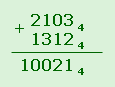
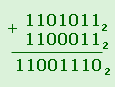
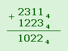

Сложение и вычитание в различных системах счисления
Сложение и вычитание чисел в любой позиционной системе счисления выполняется поразрядно. Для нахождения суммы складываются единицы одного и того же разряда, начиная с единиц первого разряда (справа). Если сумма единиц складываемого разряда превышает число, равное основанию системы, то из этой суммы выделяется единица старшего разряда, которая и добавляется к соседнему разряду слева. Поэтому сложение можно производить непосредственно, как и в десятичной системе, в "столбик", используя таблицу сложения однозначных чисел.
Например, в системе счисления с основанием 4 таблица сложения имеет такой вид:
0 + 0 = 0
1 + 1 = 2
2 + 2 = 10
3 + 3 = 12
0 + 1 = 1
1 + 2 = 3
2 + 3 = 11
0 + 2 = 2
1 + 3 = 10
0 + 3 = 3
Сложим числа 21034 и 13124.

Еще проще таблица сложения в двоичной системе счисления:
0 + 0 = 0
0 + 1 = 1
1 + 1 = 10.
Пример:

Вычитание выполняем так же, как и в десятичной системе: подписываем вычитаемое под уменьшаемым и производим вычитание чисел в разрядах, начиная с первого. Если вычитание единиц в разряде невозможно, "занимаем" единицу в высшем разряде и преобразуем ее в единицы соседнего правого разряда.
Пример: 23114 - 12234.

В первом разряде от 1 нельзя отнять 3, "занимаем" единицу второго разряда, она содержит четыре единицы первого разряда. К ним добавляем имеющуюся единицу первого разряда, всего получим пять единиц в первом разряде - в четверичной системе они записываются как 11.
Вычитаем в первом разряде из пяти единиц три единицы: 11-3=2.
Во втором разряде единиц не осталось, занимаем в третьем (в третьем останется 2 единицы). Единица третьего разряда содержит 4 единицы второго. Вычитаем во втором разряде: 4-2 = 2.